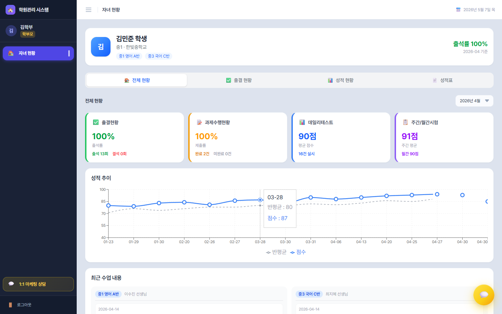

학부모 완전 가이드
학부모 화면은 메뉴 1개(자녀 현황) 안에 4개의 탭으로 자녀의 모든 학원 활동이 정리되어 있습니다. 각 탭이 보여주는 정보를 빠짐없이 풀었습니다.
학부모 메뉴 구성
좌측 사이드바엔 단 하나, 🏠 자녀 현황. 이 페이지는 상단에 탭 4개로 구성되어 있습니다.

상단 헤더
모든 탭에서 공통으로 페이지 상단에 학생 정보 카드가 보입니다.
- 학생 이름 / 학년 / 학교
- 수강 중인 반 목록 (배지)
- 출석률 (%)
📑 탭 1 — 🏠 전체 현황
한눈에 보는 종합 대시보드. 매일 1분 보기에 가장 적합한 탭입니다.
섹션 ① — 4개 요약 카드
| 카드 | 표시 내용 |
|---|---|
| 출결현황 | 출석률(%) · 출석 횟수 · 결석 횟수 |
| 과제수행현황 | 제출률(%) · 완료 건수 · 미완료 건수 |
| 데일리테스트 | 평균 점수 · 실시 건수 |
| 주간/월간시험 | 주간 평균 · 월간 평균 |
섹션 ② — 성적 추이 차트
선형 차트로 학생 점수 vs 반 평균이 한눈에 비교됩니다 (전체 기간).
섹션 ③ — 최근 수업 내용 (반별 그룹)
- 각 반별 헤더에 반 이름 · 담당 선생님
- 최근 4개 수업 항목이 시간순으로:
- 날짜
- 진도: 오늘 배운 내용
- 과제: 다음 시간까지 할 것
- 학원 메시지 (있으면 파란 배경 + 💬) — 선생님이 학부모에게 직접 전달한 메시지
📑 탭 2 — ✅ 출결 현황
한 달 단위 출석 캘린더 + 통계 분석.
섹션 ① — 월 선택 드롭다운
YYYY-MM 형식으로 보고 싶은 월을 선택.
섹션 ② — 출결 캘린더 (7×7 그리드)
각 날짜 셀에 출석 상태별 색상 + 아이콘:
| 색 | 아이콘 | 의미 |
|---|---|---|
| 초록 | ✓ | 출석 |
| 빨강 | ✗ | 결석 |
| 노랑 | ⏰ | 지각 |
| 주황 | 🚪 | 조퇴 |
| 회색 | — | 기록 없음 |
섹션 ③ — 출결 통계
- 총 횟수 + 출석률(%) 큰 숫자
- 수평 바 차트: 출석/결석/지각/조퇴 비율을 가로 막대로. 각 막대 옆에 "N회 (X%)"
- 4상태 카드형 요약 (색칠된 작은 박스)
📑 탭 3 — 📊 성적 현황
점수 추이 + 시험별 상세 내역.
섹션 ① — 데일리 테스트 점수
- 색상 범례:
- 🌈 100점 — 무지개 그라데이션 (특별 인정)
- 🔵 90~99점 — 파랑
- 🟢 80~89점 — 초록
- 🟠 60~79점 — 주황
- 🔴 60점 미만 — 빨강
- 커스텀 수직 바 차트 (180px) — Y축 눈금(0/25/50/75/100), 각 바 위 점수, X축 날짜 레이블
섹션 ② — 주간 시험 추이 (좌측 카드)
선형 차트(220px). 학생 점수(파랑) vs 반 평균(회색 점선). 범례에 "{학생명} 점수" / "반 평균".
섹션 ③ — 월간 시험 추이 (우측 카드)
선형 차트(220px). 학생 점수(주황) vs 반 평균(회색 점선).
섹션 ④ — 데일리 테스트 내역 (좌측)
"데일리" 태그(파랑). 3열 그리드로 점수 카드(점수·테스트명·날짜).
섹션 ⑤ — 주간·월간 시험 내역 (우측)
"주간·월간" 태그(보라). 시험별 리스트(이름·날짜·유형·점수/만점). 점수에 따라 색상 변화 (80+ 초록·60~79 노랑·<60 빨강).
📑 탭 4 — 📄 성적표
가장 풍부한 화면. 반별 종합 월간 성적 보고서가 카드로 펼쳐집니다.
섹션 ① — 기준 월 선택
type="month"로 기준 월을 선택. 선택 월의 데이터만 카드에 표시.
섹션 ② — 반별 성적표 카드
학생이 듣는 반마다 별도의 큰 카드. 카드 헤더는 그라데이션 색(학생별 고유 색).
카드 헤더
학생명 · 학년 · 반 · 기준 월 · 담당 선생님.
① 데일리 테스트 추이
- 선형 차트(140px) — 학생 점수 vs 반 평균
- 날짜별 점수 카드 (90+ 초록·75~89 파랑·60~74 노랑·<60 빨강)
② 주간 테스트
- 가로 막대 차트(100px) — 학생 vs 반 평균
- 분야별 점수 테이블 — 행: 영역, 열: 각 주간 테스트 (셀 색상 코딩) + 합계 행
- 최신 주간 영역별 레이더 차트(160px) — 학생 점수(색)와 반 평균(회색)을 다각형으로 비교
③ 월간 평가 — 3개월 추이
- 꺾은선 차트(140px) — 3개월 점수 추이
- 영역별 점수 추이 꺾은선(120px) — 영역별 색상으로 3개월 변화
- 분야별 테이블 — 행: 영역, 열: 최근 3개월 + 셀에 점수 + 전월 대비 ↑/↓ 화살표 + 합계 행
④ 출석 & 과제 현황
- 출석: 도넛(110px) — 출석/결석/지각/조퇴 비율 + 미니 달력(상태별 색상 사각형)
- 과제: 도넛(110px) — 우수(보라)/보통(초록)/미흡(주황)/미제출(회색) + 범례
매일 1분 사용법
- 탭 1 전체 현황 진입 → 4카드 + 최근 수업 내용 확인
- 자녀와 한마디: "오늘 ○○ 배웠다며?"
- 다음 시간 숙제(과제) 체크
매주 한 번
탭 2 출결 현황에서 이번 주 결석/지각이 있었는지 확인. 패턴이 보이면 학원에 한 통.
매월 한 번
탭 4 성적표에서 분야별 표·레이더·3개월 추이를 같이 보면서 강·약점 파악. 자녀와 함께 보면 동기부여 효과가 큽니다.
자주 묻는 질문
Q. 자녀가 둘 이상이에요. 어떻게 보나요?
현재 기본 매칭은 학부모 이름 기준 1자녀입니다. 자녀가 여러 명이면 학원 데스크에 알려주세요. 자녀 전환 UI는 추후 업데이트로 추가될 예정입니다.
Q. 비밀번호를 잊어버렸어요.
로그인 화면의 "비밀번호 찾기"를 누르면 가입한 이메일로 재설정 링크가 발송됩니다.
Q. 점수가 잘못된 것 같아요.
탭 3 또는 탭 4에서 어떤 시험인지 확인 후 학원에 직접 문의하세요. 담당 선생님이 즉시 수정합니다.
Q. 캘린더에 회색 칸이 너무 많아요.
회색은 "기록 없음" 상태입니다. 비수업일이거나 아직 출결이 입력되지 않은 날입니다.